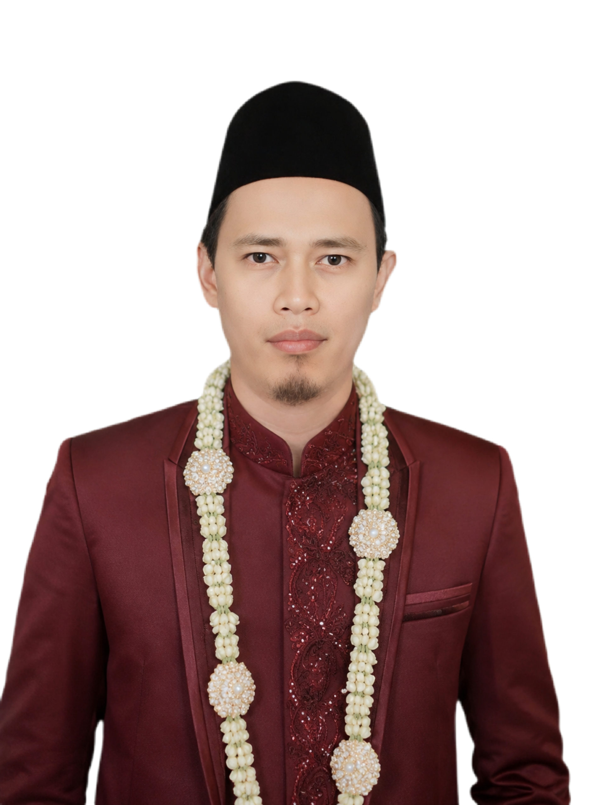

M. Ainur Ridho
Putra kedua dari
Alm. Bapak Hapi & Ibu Laila
THE WEDDING OF
13 • 06 • 2026
"Dan di antara tanda-tanda kekuasaan-Nya ialah Dia menciptakan untukmu pasangan hidup dari jenismu sendiri, supaya kamu cenderung dan merasa tenteram kepadanya."
— QS. Ar-Rum: 21
♦
Dengan memohon rahmat dan ridho Allah S.W.T., kami mengundang Bapak/Ibu/Saudara/i untuk menghadiri acara pernikahan putra-putri kami.


RANGKAIAN ACARA
AKAD NIKAH
07.30 – 09.30 WIB
Masjid Agung Lumajang
Jl. Alun - Alun Barat
Lumajang
RESEPSI
12.30 – 16.00 WIB
Kediaman Mempelai Pria
Dusun Kembang RT22/RW08 Tekung
Lumajang
Tidak semua pertemuan datang di waktu yang kita rencanakan.
Ada masa di mana kami berjalan sendiri-sendiri, belajar memahami hidup, memperbaiki diri, dan memantaskan hati.
Kami percaya, jodoh bukan sekadar ditemukan, tetapi dipersiapkan.
Dalam setiap doa yang diam-diam kami panjatkan, ada harapan agar dipertemukan dengan seseorang yang baik—yang juga sedang berusaha menjadi baik.
Hingga akhirnya, tanpa banyak kebetulan yang rumit, Allah mempertemukan kami di waktu yang terasa tepat.
Bukan karena kami sudah sempurna, tetapi karena kami sama-sama sedang berproses untuk menjadi lebih pantas.
Kami memilih untuk melangkah bukan karena telah menemukan sosok yang sempurna,
melainkan karena menemukan seseorang yang ingin terus belajar, bertumbuh, dan berjalan bersama menuju ridha-Nya.
Karena pada akhirnya,
jodoh adalah cerminan dari diri kita sendiri.
Dan sebaik-baiknya perjalanan, adalah perjalanan memperbaiki diri—hingga dipertemukan dengan yang sepadan.
Kini, dengan penuh syukur, kami melangkah ke jenjang yang lebih serius,
memulai kisah baru dalam ikatan suci pernikahan.
Semoga langkah ini senantiasa diberkahi,
dan menjadi awal dari perjalanan panjang yang penuh kebaikan.
Kehadiran dan doa restu Bapak/Ibu/Saudara/i merupakan kebahagiaan tersendiri bagi kami.
Apabila berkenan untuk berbagi kebahagiaan dalam bentuk lain, dapat disampaikan melalui QRIS di bawah ini.
Tanpa mengurangi rasa hormat, hal tersebut bersifat opsional.
Terima kasih atas segala doa dan kebaikan yang diberikan.

a.n. Nama Kamu
Terima Kasih